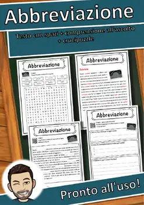
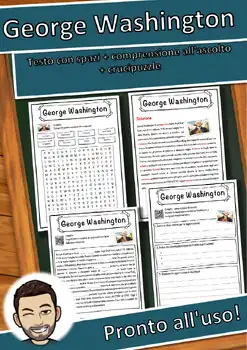
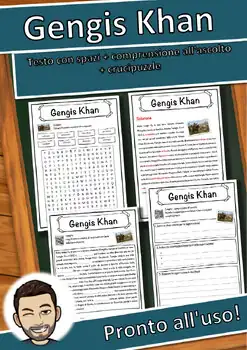
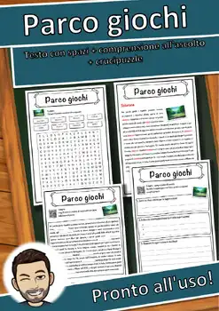
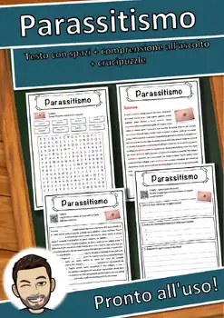

New resources
My newest resources appear here first. The list updates automatically.
48 resources

Advent House Town: Paper Advent Calendar Craft & Activities, Grades 3-4

Arbitro – Italian Reading Comprehension Worksheet (Scheda): Cloze & Listening

Apollo – Italian Reading Comprehension Worksheet (Scheda): Cloze & Listening
Anoressia nervosa – Italian Reading Comprehension Worksheet (Scheda didattica)

Afrodite – Italian Reading Comprehension Worksheet (Scheda): Cloze & Listening

Saint Martin Window Lantern Craft Template | Fall Activity | Grades 3-4

Alabarda – Italian Reading Comprehension Worksheet (Scheda): Cloze & Listening

Aggettivo – Italian Reading Comprehension Worksheet (Scheda): Cloze & Listening

Ade – Italian Reading Comprehension Worksheet (Scheda): Cloze & Listening
Ada Lovelace – Italian Reading Comprehension Worksheet (Scheda didattica)

Abbreviazione – Italian Reading Comprehension Worksheet (Scheda didattica)

3D Back-to-School Ornament Craft Template, Geometry Activity, Grades 3-4

Gerusalemme – Italian Reading Comprehension Worksheet (Scheda didattica)

Germanio – Italian Reading Comprehension Worksheet (Scheda): Cloze & Listening

Germani – Italian Reading Comprehension Worksheet (Scheda): Cloze & Listening

Georgia – Italian Reading Comprehension Worksheet (Scheda): Cloze & Listening
Georges Seurat – Italian Reading Comprehension Worksheet (Scheda didattica)

George Washington – Italian Reading Comprehension Worksheet (Scheda didattica)

Geometria – Italian Reading Comprehension Worksheet (Scheda): Cloze & Listening

Geocaching – Italian Reading Comprehension Worksheet (Scheda): Cloze & Listening

Genova – Italian Reading Comprehension Worksheet (Scheda): Cloze & Listening

Gengis Khan – Italian Reading Comprehension Worksheet (Scheda didattica)

Genere – Italian Reading Comprehension Worksheet (Scheda): Cloze & Listening
Generatore elettrico – Italian Reading Comprehension Worksheet

Gene – Italian Reading Comprehension Worksheet (Scheda): Cloze & Listening

Gemma – Italian Reading Comprehension Worksheet (Scheda): Cloze & Listening

Gemelli – Italian Reading Comprehension Worksheet (Scheda): Cloze & Listening

Gelo – Italian Reading Comprehension Worksheet (Scheda): Cloze & Listening

Gekkonidae – Italian Reading Comprehension Worksheet (Scheda): Cloze & Listening

Gazzella – Italian Reading Comprehension Worksheet (Scheda): Cloze & Listening

Gastropoda – Italian Reading Comprehension Worksheet (Scheda): Cloze & Listening
Gas naturale – Italian Reading Comprehension Worksheet (Scheda didattica)

Gange – Italian Reading Comprehension Worksheet (Scheda): Cloze & Listening

Gambia – Italian Reading Comprehension Worksheet (Scheda): Cloze & Listening

Galápagos – Italian Reading Comprehension Worksheet (Scheda): Cloze & Listening

Gallio – Italian Reading Comprehension Worksheet (Scheda): Cloze & Listening
Cerio – Italian Reading Comprehension Worksheet (Scheda): Cloze & Listening

3D Summer Ornament Craft Activity | Paper Shapes Template | Grades 3-4

Novara – Scheda: testo con spazi vuoti, comprensione all'ascolto e crucipuzzle

Grosseto – Scheda: testo con spazi vuoti, comprensione all'ascolto e crucipuzzle

3D Spring Ornament Craft: Mandala Geometry Activity Template, Grades 3-4

Paridae – Italian Reading Comprehension Worksheet (Scheda): Cloze & Listening

Parco giochi – Italian Reading Comprehension Worksheet (Scheda didattica)

Parassitismo – Italian Reading Comprehension Worksheet (Scheda didattica)

Paranco – Italian Reading Comprehension Worksheet (Scheda): Cloze & Listening

Parallelo – Italian Reading Comprehension Worksheet (Scheda): Cloze & Listening

Paraguay – Italian Reading Comprehension Worksheet (Scheda): Cloze & Listening

Paradiso – Italian Reading Comprehension Worksheet (Scheda): Cloze & Listening
No resources found – try a different search term or filter.